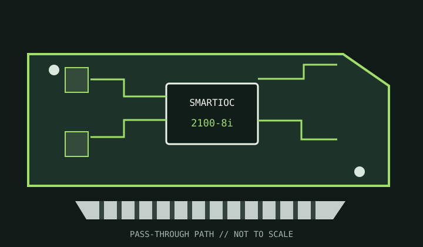

[ INDIVIDUAL COMPONENT // STORAGE / DISK I/O ]
Microchip Adaptec SmartHBA 2100-8i
A direct-attached SAS/SATA HBA with optional simple RAID functionality, intended for operating-system-managed storage stacks.

MODEL SCOPE: SmartHBA 2100-8i. This HBA is not interchangeable with a SmartRAID model; confirm the exact firmware mode and driver.
Reference specifications
| Model / controller | Adaptec SmartHBA 2100-8i SAS/SATA host bus adapter; Microchip SmartIOC 2100-series controller. |
|---|---|
| Host bus | PCI Express 3.0 x8. |
| Ports | Eight internal SAS/SATA lanes on two SFF-8643 Mini-SAS HD connectors. |
| Protocols | SAS 12 Gb/s and SATA 6 Gb/s; attached drive speed is limited by the slowest link component. |
| RAID / HBA mode | Designed for HBA/pass-through operation. SmartHBA firmware also offers basic RAID 0, 1, 10 and 5 functions; it is not a SmartRAID write-cache array controller. |
| Cache / protection | No protected write-back cache or BBU is specified for this HBA. Do not treat host RAM or drive cache as controller-protected cache. |
| Firmware / OS | Use Microchip SmartHBA firmware and the current model-matched driver/management tools. Confirm the supported Windows, Linux, FreeBSD and hypervisor releases in Microchip's OS matrix. |
| Drive / backplane caveats | Check SFF-8643 cable wiring, expander support, enclosure management and SATA compatibility. ZFS and other software storage stacks generally require supported HBA/pass-through mode. |
Compatibility and service notes
- Simple RAID feature availability depends on the selected firmware and management utilities; verify before planning an array.
- Confirm the card is in HBA mode when using host-managed software RAID, and avoid controller metadata on drives intended for another platform.
- Keep a backup and record firmware, PCI IDs, drive sector sizes and backplane mapping.
Sources & further reading
- Microchip — SmartHBA 2100-8i product and documentation pageManufacturer product information, driver and documentation entry point for the exact adapter.
- Microchip — SmartHBA / SmartRAID Installation and User GuideOfficial adapter installation, firmware, driver and configuration reference.
- Microchip — Adaptec SmartRAID, SmartHBA, HBA and SAS supportManufacturer support and compatibility resources.